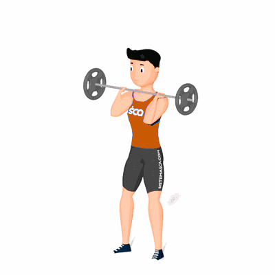

Thruster

Esse exercício desenvolve os músculos do quadríceps e glúteos e a coordenação.
Ficha Técnica
Tipo: CrossFit
Grupo Muscular: Corpo
Aparelho: Nenhum
Músculos: Nenhum
Como realizar
- Retirar a barra do rack e colocá-la abaixo do queixo e apoiada nos ombros;
- Os pés devem estar à largura dos ombros e as pontas dos pés ligeiramente viradas para fora;
- Desça em posição de agachamento e retorne à posição em pé;
- Durante a explosão do movimento, empurre a barra acima da cabeça.
 RC STORE
RC STORE